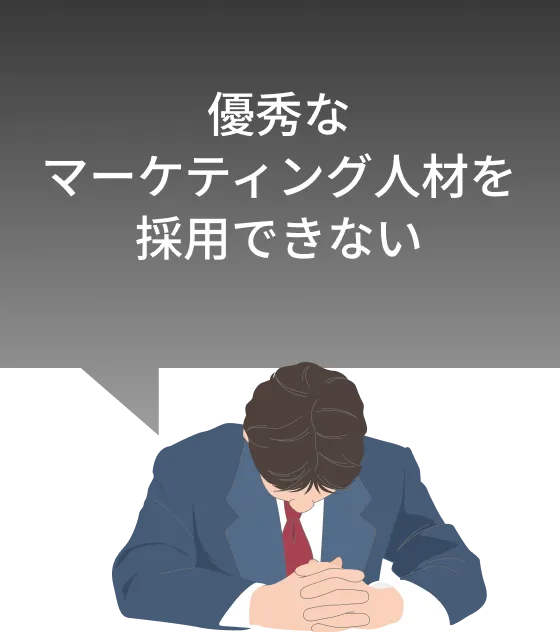
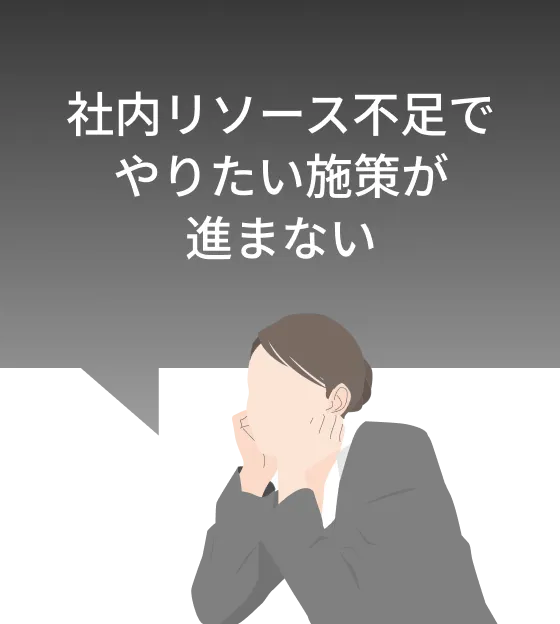
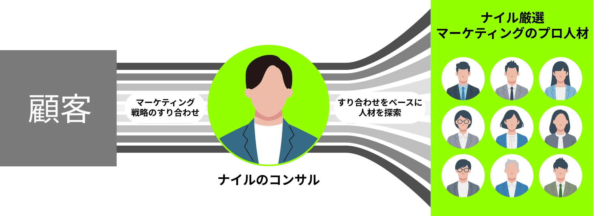
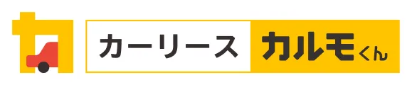
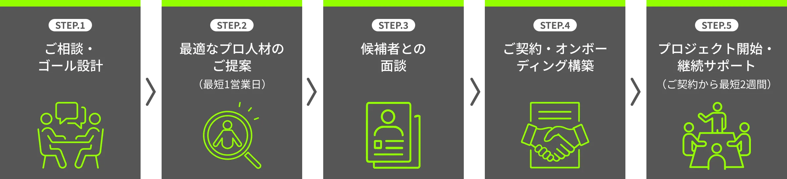

マーケティング特化！
即戦力のプロ人材を
厳選してご紹介
-
週1〜稼働の副業/複業人材も多数在籍
-
最短1営業日で候補者をご提案
最短1日で貴社に
最適な人材をご紹介！
こんなお悩みは
ありませんか？
-

-

-
-
Nyle X Partnersとは？
Nyle X Partnersは、厳しい審査を突破したプロ人材・副業/複業人材が
貴社マーケティングチームの一員となり、事業における業務推進を担うサービスです。
ナイル在籍の現役トップコンサルタントが貴社状況をヒアリングし、最適なスキルを持つ人材をマッチング。
マッチング後も、コンサルタントが継続的に伴走し、アサインされた人材が
貴社チームに完全に定着・自走できる状態を目指すことで、プロジェクトの成功率を高めます。

選ばれる４つの理由
-
理由その1
採用倍率100倍の
マーケ会社だから持つ
「人材を見抜く目」ナイルは2,000社以上のマーケティング支援実績と、倍率100倍を超える自社採用を通じて、「優れたマーケティング人材を見抜く力」を培ってきました。スキルや実績はもちろん、急成長ベンチャーで求められる自走力、当事者意識、変化への対応力といったマインド面も、弊社のコンサルタントが徹底的に見極めます。
-
理由その2
産業DXを推進する
事業会社としての
「実証済みのノウハウ」ナイルは単なる支援会社ではなく、自動車産業DX事業では年10億円規模の広告運用や数十万件のCRM運用を完全内製で成功させてきました 。私たちは自社事業を「成功が実証されたノウハウを蓄積する実験場」と位置づけ、自らの予算で実証し、本当に成果が出た手法とそれを実行できる人材だけを、お客様にご提供します。
-
理由その3
現役トップ
コンサルタントとの
「作戦会議」現役のトップコンサルタントが、貴社のマーケティング課題をヒアリング。実現性の高いプランをすり合わせた上で、貴社に最適なプロ人材をアサインします。
-
理由その4
貴社の成果に
貢献し続ける
「品質の仕組み」アサインされた人材は、ナイル独自の研修と月2回のコンサルタントとの1on1を通じて、常に最新事例やマーケティング手法を学びます。こうした仕組みにより、貴社は陳腐化しない最新のノウハウを自社の取り組みに反映し続けることが可能です。
こんなマーケティング
課題を
即戦力人材が
解決します
-
CASE01
慢性的な人手不足を、
即戦力で解消したい「マーケターが退職してしまった」「採用活動がずっと難航している」。そんな慢性的なリソース不足を、貴社の即戦力となるプロ人材が解決。採用にかかる数ヶ月を待つことなく、止まっていた業務をすぐに推進できます。
-
CASE02
将来の「内製化」を
見据え、
まず実行体制を
構築したい「代理店任せでノウハウが貯まらない」「いきなり正社員を採用するのはリスクが高い」。まずはナイルのプロ人材を“最初の実行部隊”に。施策を動かしながら成功の型を作り、賢い内製化の第一歩を支援します。
-
CASE03
新しいチャネルへ、
専門家の力で挑戦したい「広告運用も始めたい」「SNSに挑戦したいが知見がない」。そんな新しい挑戦には専門家が不可欠です。各領域のスペシャリストが戦略設計から実行までをリードし、成功確率の高いスタートダッシュを実現します。
-
CASE04
事業の急拡大に合わせ、
マーケティングチームを
柔軟に拡張したい事業フェーズの変化に応じて、人材は柔軟に増減させる時代です。「広告運用者1名、コンテンツ担当2名」といったチーム単位でのご依頼にも、ナイルは迅速に対応。貴社の事業拡大を加速させる「拡張部隊」を即座に組成します。
ご紹介可能なプロ人材
（一例）
-
広告運用スペシャリスト
（30代）- 経歴
- 大手Web広告代理店でMVPを複数回受賞
- 得意領域
- 月額数千万円規模の広告運用、CPA改善、LPO
- 実績例
- SaaS企業の広告費用対効果を半年で5倍に改善。
-
BtoBコンテンツマーケター
（40代）- 経歴
- 元事業会社CMO。BtoB事業のマーケティングに強み。
- 得意領域
- 戦略立案、MAツール運用、インサイドセールス連携
- 実績例
- 30社以上のtoB企業のマーケティングを支援し、新規顧客獲得数を平均300%向上。
-
SEOコンサルタント 兼
コンテンツ戦略家（40代）- 経歴
- 事業会社でオウンドメディア責任者を務め、メディアを数百万PV規模に成長させた後、独立。
- 得意領域
- SEO戦略立案、テクニカルSEO、コンテンツマーケティング設計、グロース戦略
- 実績例
- 金融系メディアの自然検索流入を1年で400%（月間100万PV）増加させ、事業の主要な集客チャネルへと成長させた。
-
CRM & マーケティングオートメーション専門家（40代）
- 経歴
- 大手EC企業にてCRM部門を立ち上げ。MAツールの選定からシナリオ設計、運用までを一貫して担当。
- 得意領域
- MAツール（Salesforce、Marketo等）導入・運用、顧客データ分析、ナーチャリング戦略設計、LTV最大化
- 実績例
- toCサブスクリプションサービスにおいて、ハウスリストの掘り起こし施策を設計。購入数を2倍に向上させた経験を持つ。
デジタルマーケティング
全領域に対応
-
プロジェクト推進（PM）、SEO & サイト改善、コンテンツマーケティング、アクセス解析、リスティング広告、SNS運用、CRM構築・運用、Webデザイン、UI/UX、広報・PR、MA、メルマガなど
-
インサイドセールス、フィールドセールス
熱量と実行力が、
成果に変わった事例
-

カーサブスクサービス
「カーリースカルモくん」ナーチャリング施策により1年でKPI300%達成。失注顧客を含むリードへのアプローチ体制を構築し、審査通過数を100件/月から315件/月へと大幅に伸長させました。
-
自社メディア
「ナイルのSEO相談室」インサイドセールス体制の整備により四半期で100件の商談を創出し、5,000万円超の受注を達成。施策前は45件/Qだった商談創出数を100件/Qまで伸長させました。
ご予算や課題に応じた、
料金プラン例
ご料金は業務内容や稼働時間に応じて柔軟に設定可能です。
以下はあくまで一例ですので、まずはお気軽にご状況をお聞かせください。
-
ケースA
週1回のマーケMTG定例参加
＋施策の壁打ち- 稼働時間目安
- 月16時間〜
- 料金目安
- 月額15万円〜
-
ケースB
広告運用代行
（媒体費500万円規模）- 稼働時間目安
- 月40時間〜
- 料金目安
- 月額40万円〜
-
ケースC
SEOコンテンツの
企画・ディレクション- 稼働時間目安
- 月30時間〜
- 料金目安
- 月額25万円〜
ご支援の流れ

よくあるご質問
- 契約期間や最低稼働時間に縛りはありますか？
- 契約期間は1ヶ月からとなります。最低稼働時間についても短時間から柔軟にご相談いただけます。
- 副業や複業で活動している人材も紹介可能ですか？
- はい、可能です。ナイルには、企業に所属しながら活躍されている優秀な副業・複業人材も登録されております。
- アサインされた人材が合わなかった場合、交代は可能ですか？
- はい、可能です。万が一、パフォーマンスや相性に課題がある場合は、担当コンサルタントが迅速に状況をヒアリングし、別の候補者の再提案など、速やかに対応いたしますのでご安心ください。
- 契約終了後、プロ人材を採用できますか？
- はい、可能です。所定の人材紹介手数料（契約年収の35%）を申し受けることで、正社員としてご採用いただけます。
- 契約の仕組みはどうなっていますか？
- 貴社とナイル間で業務委託契約を締結し、ナイルとプロ人材が業務委託契約を締結する形となります。